Four to six implants carry a complete fixed bridge — planned in Zürich, placed in Budapest. In most cases no bone grafting is needed, and you leave with teeth that do not come out.
All-on-4® is an implant technique developed in the 1990s by Dr. Paulo Malo, a Portuguese dentist. Just four to six implants support a complete fixed upper or lower denture.
The posterior implants are placed at an angle, which makes better use of the bone you already have — so in most cases no bone grafting is needed. A temporary fixed bridge goes on within 48–72 hours of surgery; the final bridge follows after a 3–4 month healing period.
The premium Swiss-enhanced versions of the classic All-on-4™ concept — not a generic system. Your implant passport travels home with you.
{{ a.desc }}
Real full arch cases, photographed before treatment and after the final zirconia-ceramic bridge was fitted. Pick a case to see what changed.
{{ activeCase.desc }}
Individual results vary with bone volume, gum health and healing. Photographs to be supplied by the clinic with documented patient consent.
NeoArch and Pro Arch restore a confident smile, clear speech and comfortable eating. Here is who it suits — and where we take extra care.
At the consultation a 3D CBCT scan and a detailed medical history are used to determine individually whether All-on-4 is the right choice for you. Both are complimentary.
The upper jaw typically has a softer bone structure, so six implants are more often chosen there. The lower jaw is generally denser, so four provide adequate stability.
Consultation and aftercare stay in Zürich. Click through what happens in between.
{{ activeDay.desc }}
The price covers 3D planning, the implants, both the temporary and the permanent bridge, follow-up examinations and the implant warranty. Your exact figure is set after a personal consultation — because the plan is set after the scan, not before it.
What's includedEvery patient at PureDental Schweiz is treated personally by Dr. Zsolt Majtényi.
"I trained at Semmelweis University in Budapest, then spent several years working in clinics across Germany. What I learned there changed how I practice: precision, empathy, and an uncompromising standard for the work — not as marketing language, but as a daily discipline.
Every patient who comes to me from Switzerland gets the same care, the same materials, and the same attention to detail they would expect from a top private practice in Zürich. The only difference is the price they pay — and the fact that I personally know every single one of them by name."
— Dr. Zsolt Majtényi
{{ r.quote }}
As with any surgical procedure, implantation carries a risk of complications. The remaining risk is real, and every patient has the right to know exactly what to expect.
If you follow the post-operative instructions and attend regular check-ups, most of these can be prevented or effectively treated. The lifetime warranty applies to the implant with proper oral hygiene care.
If yours isn't here, write it in one line and Dr. Majtényi will answer it personally.
{{ f.a }}
Book a call or upload your X-ray, and Dr. Majtényi sends back a written pre-proposal within 48 hours — an indicative treatment plan and price range. Your exact figure follows the complimentary 3D CBCT scan at the consultation.

PUREDENTALSCHWEIZ 🇨🇭